| |
Booleans and Related Functionality |
| <<< Model Structure | Chapters | Local Operations >>> |
Parasolid offers unparalleled boolean capabilities, allowing you to take sets of modelling entities and compare or combine them in a wide variety of ways. This chapter describes Parasolid’s powerful boolean functionality, together with related functionality that either uses Parasolid’s boolean capabilities or is similar to it.
Boolean operations are a fundamental type of operation in Parasolid. Not only is boolean functionality available to you, the programmer, but it is used extensively by Parasolid itself. This section describes the boolean functionality that Parasolid supports:
Boolean operations involve the combination of two or more bodies so as to create a new result.
In Parasolid, boolean operations work on target bodies and tool bodies. A target is the body that you start with, the body that is modified by the operation, and the body that is returned by the operation; it is the body that persists throughout the whole of the boolean operation. The tool (or tools, since there can be several of them for some types of boolean) are the bodies that do the modifying. They are transient bodies that are destroyed at the end of the boolean operation.
Boolean operations in Parasolid are analogous to mathematical set operations. There are three basic boolean operations, as follows:
Boolean operations can be performed on solid, sheet, and wire bodies (with the exception that wire bodies cannot be intersected). They can be performed using either manifold or general bodies (see Section 3.7, “More about bodies”), and the results may themselves be either manifold or general.
These operations are illustrated in Figure 4-1.
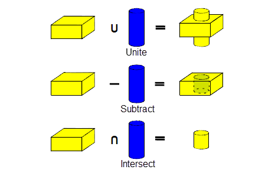Figure 4-1 Basic boolean operations
There is always a single target in any boolean operation. As already mentioned, there can be many tools, in which case Parasolid unites them before the boolean operation proceeds, treating them as a single body from that point on.
Parasolid offers two broad categories of boolean operation: global booleans and local booleans. These are discussed in the following sections.
Global booleans perform boolean operations on whole bodies, taking a single target body, and multiple tool bodies, and applying the specified boolean operation to the target. Because the operation is performed at the body level (by comparing all pairs of faces in the target and tool), the resulting body is guaranteed to be topologically consistent. Global booleans, because of the nature of the face pair comparison, can be computationally very expensive.
Local booleans (sometimes known as partial booleans), tend to be very quick to perform compared to global booleans. Rather than working at the body level, local booleans use a set of faces from a target body, and a set of faces from a single tool body. You specify these faces yourself, and only the faces you specify are used in the boolean operation. Restricting the scope of the boolean operation in this way can drastically improve performance.
Parasolid’s boolean functionality supports a wide range of options that you can use to create a huge number of effects. Most of these options can be used with both global and local booleans, although some only apply to one or the other. This section describes some of the most common options.
Very often, there are regions on the supplied target and tools that are intended to be coincident, or matched. For some configurations (such as slightly mis-aligned geometry and topology), it is non-trivial for Parasolid to try and evaluate matched regions itself, and the success of this cannot always be guaranteed, leading to slow performance or failed boolean operations. In order to aid or enhance the result of a boolean operation, you can tell Parasolid which regions are to be matched. This is a flexible process: you can specify faces that should be matched, or edges, or a combination of both. Figure 4-2 shows some examples.
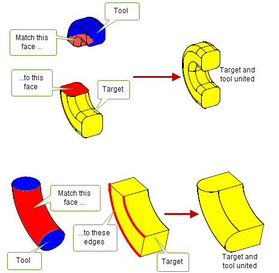Figure 4-2 Specifying matched regions to improve boolean operations
You can enclose solid regions or add solid regions to a solid target by uniting it with a sheet tool. By choosing options to specify the resulting type of body, Parasolid ensures that the resulting body remains manifold.
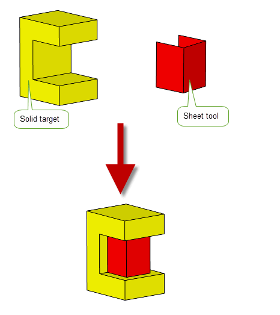Figure 4-3 Uniting solid and sheet bodies to enclose a solid region
By uniting a sheet target with solid tools, you can create a punched sheet, as shown in Figure 4-4. This functionality provides a simple way for you to add sheet tooling functionality to your application.
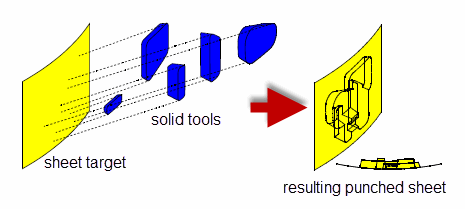Figure 4-4 Punching a sheet target body with five solid tool bodies
You can divide a solid target into sections by subtracting a sheet tool. You can then use Parasolid’s fencing capability to choose which of these sections to retain after the boolean operation.
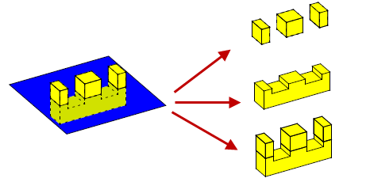Figure 4-5 Dividing a body into sections using fencing functionality
You can control which topologies to retain when solid regions overlap during a general boolean operation as illustrated in Figure 4-6.
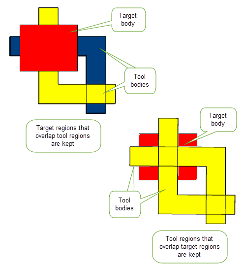Figure 4-6 Retaining topologies during a boolean operation
Parasolid’s boolean functionality supports a wide variety of other options that are not discussed here. These include:
Parasolid provides a number of boolean tools so that you can create your own specialized boolean functionality, in order to include unique features not available with the standard boolean operations. You could use these tools, for instance, to add preview functionality to your boolean operations, or to remove unwanted areas of overlapping sheet bodies before sewing them.
Boolean tools are available to let you:
To implement your own manual boolean functionality, you could imprint edges on a target and tool, identify the distinct face sets on the target and tool, and then remove the ones you don’t want. Finally, you could use fuse the remaining face sets into a single body. Figure 4-7 shows how you could use boolean tools to implement your own boolean subtract functionality.
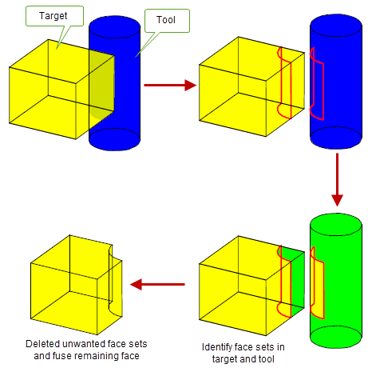Figure 4-7 Implementing your own subtract functionality using boolean tools
Instancing is a process that combines a single target and one or more tools with a local boolean operation and an array of transforms so as to repeat the boolean across target faces, thereby creating a set of instances of the specified tools, arranged according to the transforms you supply. It is a one-stop procedure for creating complex patterns, such as a series of holes in a plate, and offers significantly improved performance compared with creating the same effect using standard boolean operations alone.
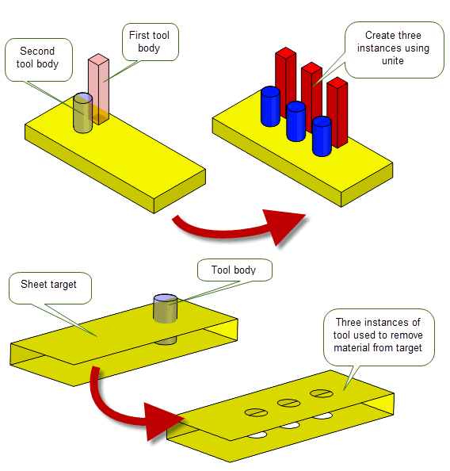Figure 4-8 Creating instances on solid and sheet bodies using single and multiple tools
You can use many of the same options when creating instances of a tool as you can when performing local booleans.
Parasolid also supports patterning functionality, which lets you create copies of a set of faces according to an array of specified transforms. Although patterning may initially appear very similar to instancing, it does not use any of Parasolid’s boolean functionality. It therefore provides you with a useful alternative to instancing for cases where instancing may be difficult or impossible.
When creating patterns, you specify a set of faces on the target body, rather than a separate target and tool, together with an array of transforms that describes how the patterns are to be positioned. Figure 4-9 shows a simple example, in which both the pocket and the boss on the body are to be patterned. A single transform is also given, resulting in the body shown. This particular example could not be performed using a single instancing operation, because it would require a boolean operation that could unite and subtract simultaneously.
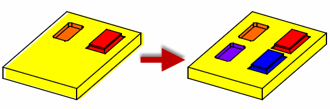Figure 4-9 Patterning example of one transform of both a pocket and a boss
Patterning supports options to constrain patterned faces so that they do not overlap face edges, or do not intersect. In addition, you can create patterns that are repeated across different faces in the body. Parasolid also supports general patterning functionality, in which geometry for a set of patterned faces can be extended automatically in order to ensure the patterning is successful.
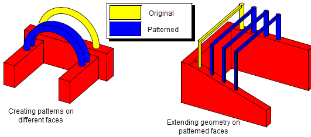Figure 4-10 Patterning within a face or to another face via rigid translation
It is also possible to create patterns in different faces where the base of the original feature is not rigidly translated to the face containing the new instance; in some cases, it may straddle two or more faces.
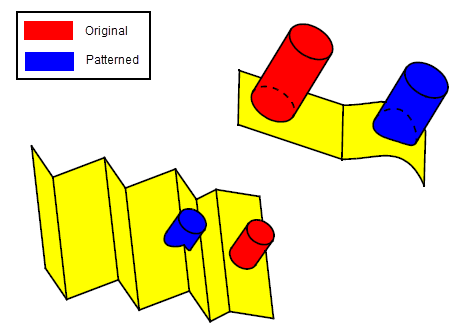Figure 4-11 Patterning to another face without rigid translation or to two faces
Parasolid allows you to recreate blends around patterned instances: if a pattern face is a blend within a boundary loop, you can recreate that blend during the pattern operation in order to maintain the blend characteristic of that face.
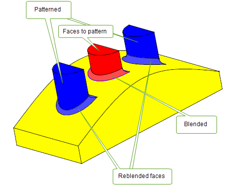Figure 4-12 Recreating blends on patterned faces
Sectioning is the process of dividing a body into sections using faces, surfaces or sheets, and optionally throwing away unwanted sections. As well as providing some sectioning behaviour using the standard boolean functionality, Parasolid offers dedicated sectioning tools that work in a similar fashion to the standard boolean subtract operations (and, in particular, the fencing behaviour described in Section 4.2.2). Two broad categories of sectioning are supported by Parasolid: destructive sectioning and non-destructive sectioning.
Destructive sectioning divides a single target body using a single tool body. As with booleans, the target body is modified and returned, and the tool is discarded. There are two types of destructive sectioning: global sectioning and local sectioning, and these are analogous to their boolean equivalents.
In a global sectioning operation, a body is divided into sections using a tool body that is either a surface or a sheet. Like global booleans, the resulting sectioned body is guaranteed to be topologically consistent, but because of the global nature of the operation, performance might be an issue in some circumstances.
In a local sectioning operation, selected faces of a target are divided using selected faces from a sheet tool. Like local booleans, the restricted focus of a local sectioning operation provides excellent performance, but can result in topological inconsistencies: locally sectioned bodies may need to be checked before continuing with modelling.
Both global and local sectioning functions support a similar range of options to global and local booleans.
Non-destructive sectioning supports a different range of options to destructive sectioning, allowing you control over details such as the type of body returned by the operation.
In non-destructive sectioning, nothing is deleted after the operation and, instead of modifying the target, the specified tools are altered. You can section any number of bodies using any number of tools and both surfaces and sheet bodies can be used as targets.
With non-destructive sectioning you can also choose to create wire body sections from a set of offsets of a single tool plane as illustrated in Figure 4-13. This functionality can be useful when creating sections in additive manufacturing workflows where models are sliced in preparation for printing.

Figure 4-13 Sectioning a body using a tool plane
You can analyse any combination of solid, sheet and wire bodies to find out whether or not they clash; if they do, you can discover the nature of the clashes. Parasolid is able to distinguish between the following types of clash:
The precise nature of these types of clash depends on the types of body that you are analysing. For example Figure 4-14 illustrates the ways in which sheet bodies can clash.
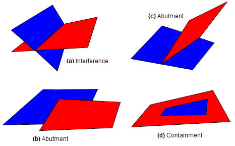Figure 4-14 Detecting clashes in sheet bodies
| <<< Model Structure | Chapters | Local Operations >>> |